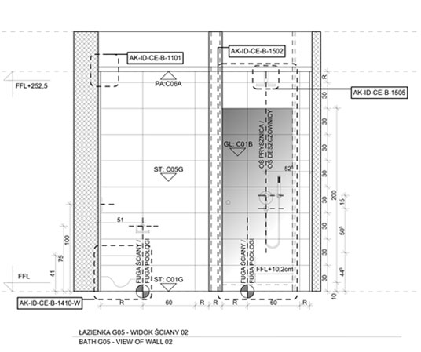
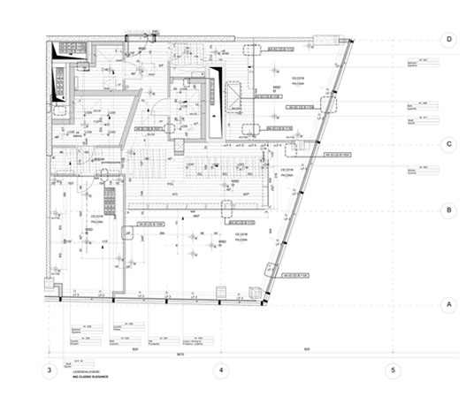
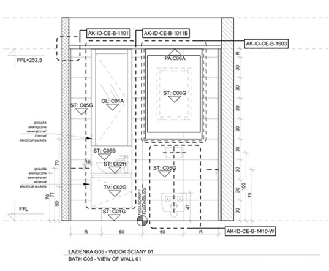
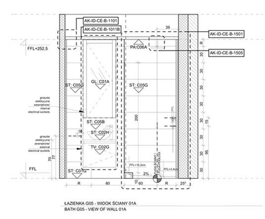
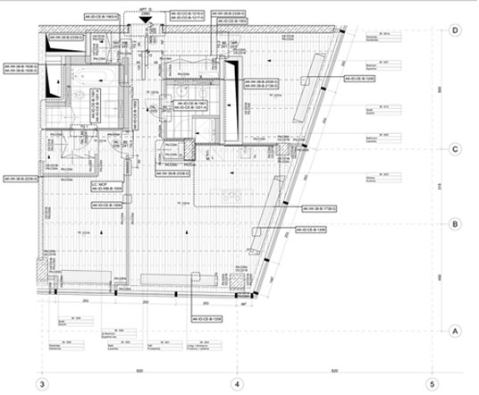
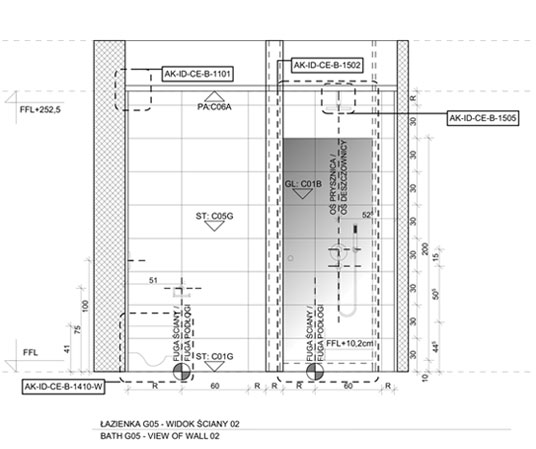
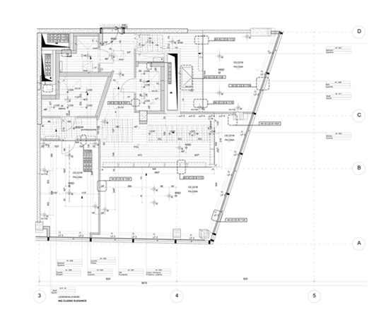
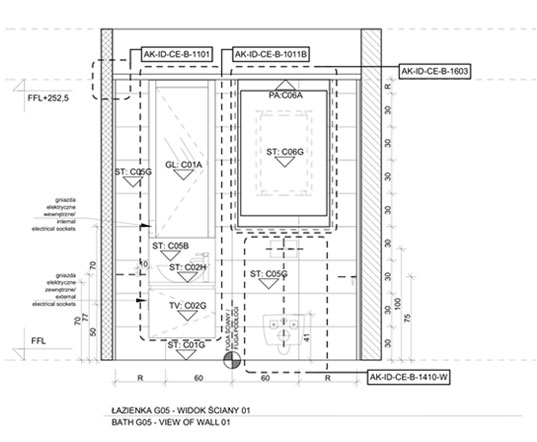
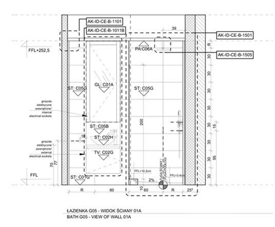
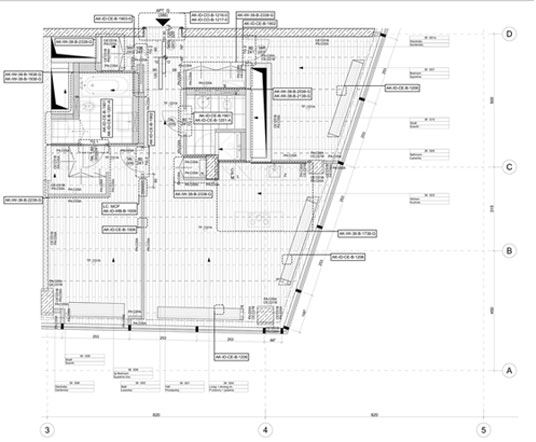

Projekt hotelu w Warszawie na Mokotowie przy ulicy Sikorskiego Władysława
Projektowany hotel kongresowy jest ekskluzywnym i nowoczesnym projektem, zlokalizowanym w samym sercu Mokotowa, w jednej z najbardziej prestiżowych dzielnic Warszawy. Hotel jest skąpany w zieleni, a nowoczesna architektura jest luksusowa i estetyczna. Ciekawa forma architektoniczna oraz atrakcyjnie zaaranżowana zieleń z pewnością stworzy unikalny klimat, pewną atrakcje oraz z nowe doświadczenia dla klientów.


 








